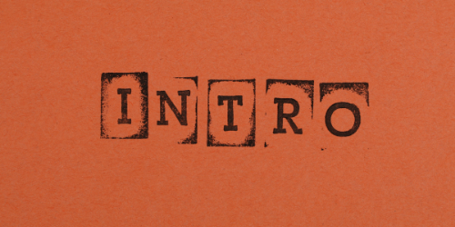

Introduction
Introduction of myself, May 4th, 2021

Hello! My name is Devon and I am 21 years old! I am learning
to become a new full stack developer through the coding
bootcamp Coding Temple! So far I am absolutely loving everything
about coding. My hope one day is to be able to be a developer
at Tesla!
Why I'm becoming a developer...
Explanation of why I am coding, May 4th, 2021
The first time I ever found out that coding was a thing
was when I was scrolling through social media and actually came
across a women who was talking about it. She said it was a lot like
doing puzzles all day, and with COVID, that is all i've been doing!
So, I looked into it, did some prep work and absolutely fell
in love with every aspect of coding. Have I wanted to pull some hairs
out yet? Oh believe me, yes I have, but in the end it is so entirely
work the effort!